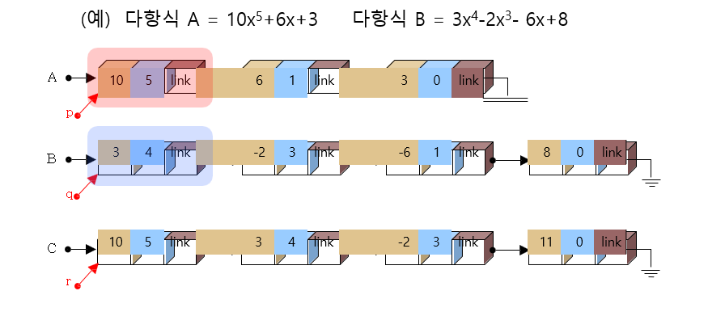

다항식 덧뺄셈을 자기참조구조체를 사용하여 구현한 방식입니다.
이 구현방법은 차수와 계수 값을 입력받고 구조체 포인터에 저장하여 다음
다항식을 링크로 연결한
자기참조 구조체로 표현한 방법입니다.
이 방법의 장점은 동적 메모리 할당이라 낭비되는 메모리가 배열을 사용한
방식보다 훨씬 적고 값들의
삽입, 삭제 시간이 훨씬 빠르고
자유롭습니다.
이 방법의 단점은 소스를 작성하는데 복잡하다는 것 입니다.
왼쪽 각각의 메뉴들을 통해 자기참조구조체를 이용한 다항식 덧뺄셈 알고리즘을 알아보세요!
